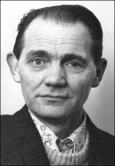

Minneord:
Ragnar Hammer
Det er alltid vondt når et menneske en kjenner og setter pris på dør. Meldinga om at Ragnar Hammer er borte vakte mange tanker og minner i meg.

Ragnar og Margareth Hammer var mine naboer på Steinberget i Kristiansund i den for meg viktige tida i overgangen mellom barndom og ungdom. Min far var kommunist, men desillusjonert og negativ særlig til de norske kommunistenes binding til Sovjetunionen og til det vonde og klossete oppgjøret med den såkalte “Furubotnfløya” i NKP.
Det var derfor på mange måter Ragnar og Margareth som introduserte meg til politikken, og til og med fikk meg med i NKU og dessuten skaffet meg muligheter til å reise til Tsjekkoslovakia og DDR! De reisene var store opplevelser for en tretten-fjorten åring fra arbeiderklassen hvis eneste andre mulighet til å “se verden” var å reise ril sjøs, noe jeg ikke kunne på grunn av dårlig helse.
Bekjentskapet med familien Hammer resulterte altså i det som ble mine første famlende steg inn i det som skulle gjøre meg til politisk opposisjonell.
Både reisene og medlemskapet i NKU var nemlig politiske handlinger som skulle vise seg å få ganske store konsekvenser, både på godt og vondt, men jeg tror jeg kan si at det markerte et viktig positivt veiskille i livet sjøl om jeg ble medlem i ungdomslaget bare ei kort stund før jeg forsvant over til Sosialistisk Folkeparti i noen år for senere aldri å bli partipolitisk aktiv igjen.
Nesten like viktig som det politiske var det forresten at Ragnar og Margareth introduserte meg som tolvåring til den splitter nye amerikanske musikkforma som het rock and roll, noe som skulle vise seg å bli en livslang fascinasjon som med tida til og med smittet over på et av mine egne barn og sannsynligvis indirekte resulterte i Norges heteste rockabillyband, Toini & the Tomcats.
Jeg tror vel kanskje Ragnar og Margareth var like forvirret som meg over at denne musikkforma, som var så bunn folkelig og hadde sitt utspring i blues og country, ble stemplet av Moskva som “borgerlig”?
Så kanskje det førte til den erkjennelsen at Partiet nok ikke alltid hadde rett… Noe som igjen gav andre viktige politiske ledetråder videre. Uten at jeg sjølsagt på noen måte skal skylde på noen andre enn meg sjøl for at jeg endte som “frihetlig sosialist”, for å bruke det pene navnet på det.
Ragnar som var kinovakt var forresten også den som sørget for at jeg fikk “midlertidig dispensasjon” på aldersgrensa når det gikk musikkfilmer på kino!
Naboskapet opphørte da vår familie flyttet til industristedet Sunndalsøra, der min politiske radikalisme ikke ble alt for vel mottatt i en del kretser, om jeg får lov til å si det slik.
Seinere flyttet jo også familien Hammer til Oslo, men en viss sporadisk kontakt ble det likevel.
Siste gang jeg snakket med Ragnar var i forbindelse med skrivinga av boka I flaggets fold. Noe av det han fortalte om rakk å komme med i boka, men det var mye interessant i det jeg fikk vite som burde ha blitt med. Mye som forteller om hvor både vanskelig og til og med farlig det faktisk var å være politisk opposisjonell i NATO-landet Norge i tida etter Gerhardsens Kråkerøy-tale som stemplet kommunister som “forrædere”.
Når Ragnar nå er død, er for meg et viktig bindeledd til fortida borte. Men ikke glemt.